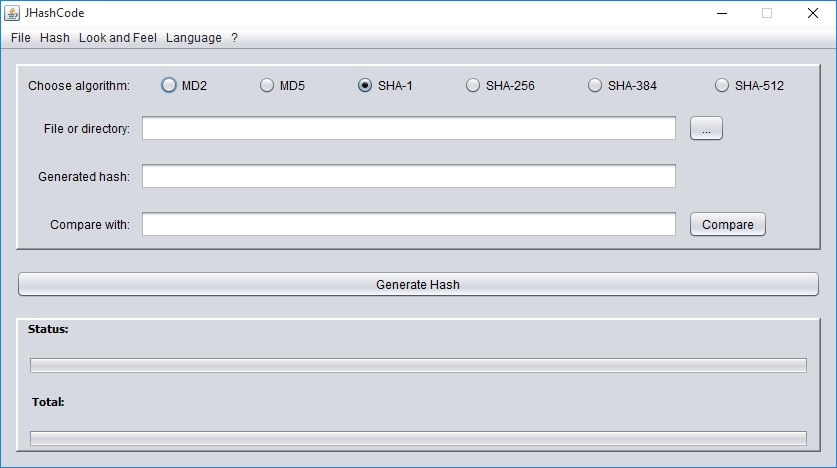

JHashCode
a simple hash code generator
The program allows you to generate the hashes with the chosen algorithm (MD2, MD5, SHA-1,
SHA-256, SHA-384 and SHA-512) of a single file or an entire folder (you can choose to scan the folder recursively or not recursively). It supports drag and drop of
files and folders. The hash can be exported to text files.
Java Runtime 6 or higher is required.
Source code available on GitHub
Features:
- Show progress during operation
- Calculate the remaining time
- Calculates processing speed
- Shows the total number of files in a folder
- Show folder size
- Can use two different algorithms to enumerate files in the folder
- Translated into three different languages: english, italian and spanish
- Platform indipendent: can run on windows, mac and linux
- Can be used without installation
- Generate checksums of file and folders in BSD-style
- Can be used as a library on an application server
